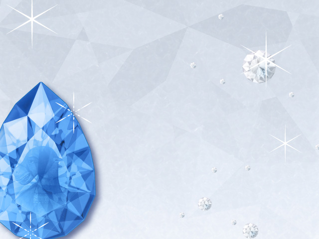
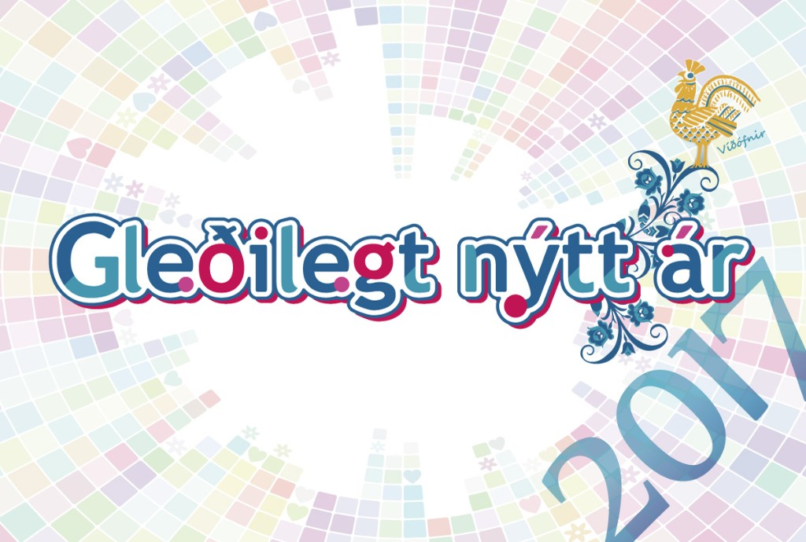
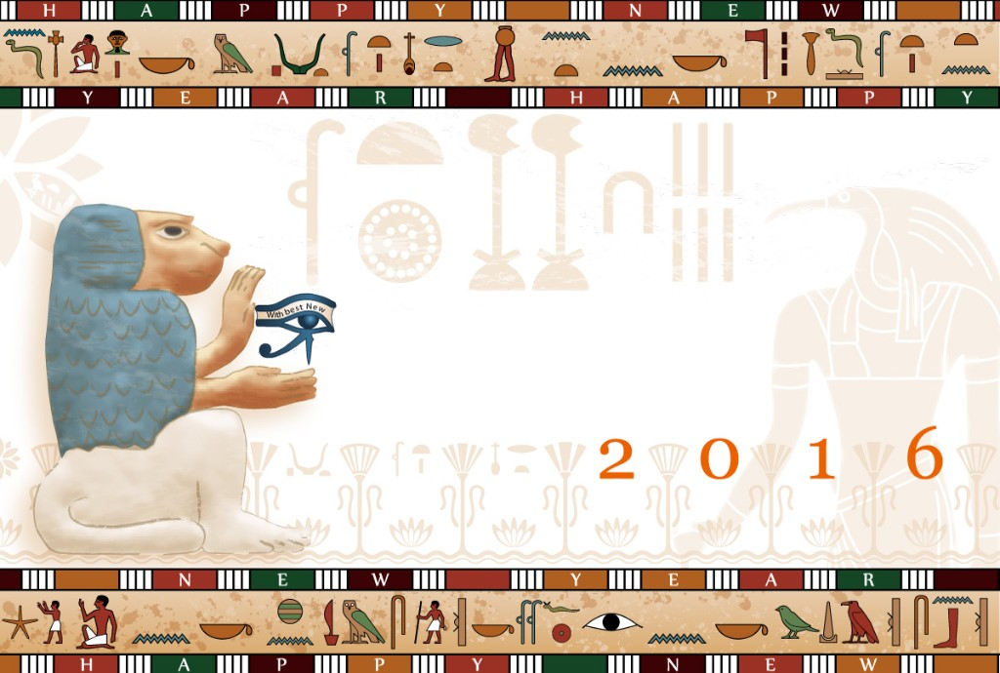
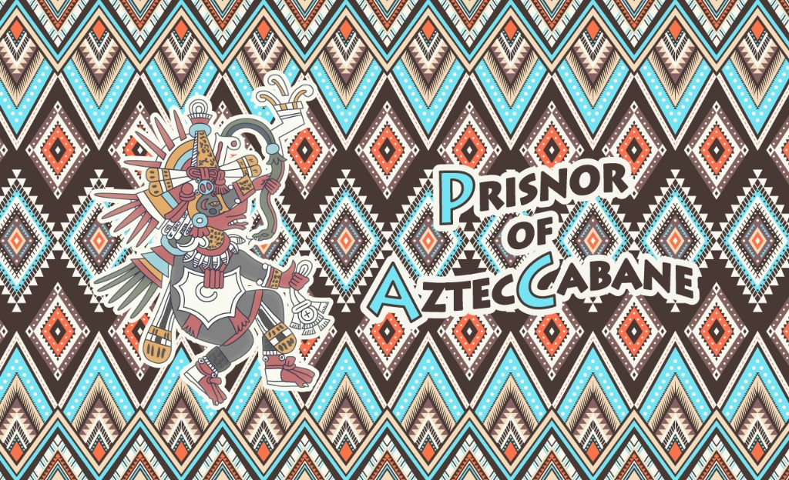

← Portfolio
Adobe Illustrator で制作した作品です。年賀状は個人制作、バナーは職業訓練時の課題です。

個人制作 / Adobe Illustrator宝石モチーフのなかに戌（犬）を忍ばせた年賀状。

個人制作 / Adobe Illustrator「Gleðilegt nýtt ár」（アイスランド語の新年の挨拶）と雄鶏モチーフ。

個人制作 / Adobe Illustrator古代エジプトをモチーフにした年賀状。

職業訓練時の課題 / Adobe Illustratorアステカ風のパターンと人物を用いたWebバナー。